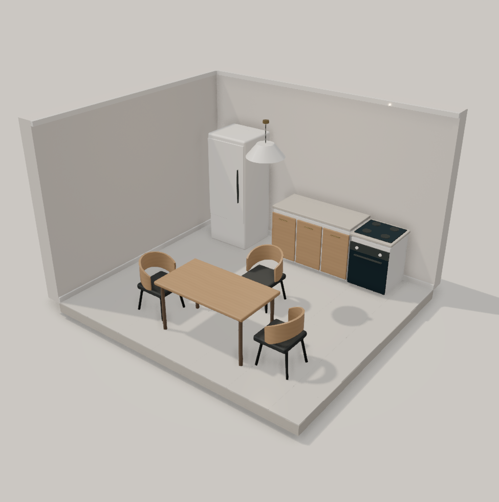

Original language · 694 bytes

Actual editor render. Complete source
DETAIL project "Kitchen: 4 × 3.5 m. @ rotates furniture in degrees."
DETAIL project "Append <https://...> to furniture to keep its product link."
GRID 0.5
ROOM main 8x7 AT 0,0
WALLS north east south west
DOORS south
WINDOWS east
SURFACE tile
LIGHT ceiling_light AT 4,3 POWER 18
LAYOUT main
. | . | . | . | . | . | . | .
. | fridge~north | . | . | kitchen_counter[1.35x0.62x0.9]~north | . | stove~north | .
. | . | . | . | . | . | . | .
. | . | . | . | kitchen_chair | . | . | .
. | . | . | . | . | . | . | .
. | . | kitchen_chair@90 | . | kitchen_table[1.4x0.78x0.74]<https://www.ikea.com/us/en/p/lisabo-table-ash-veneer-70294339/> | . | kitchen_chair@270 | .
. | . | . | . | . | . | . | .
END
DESIGN 2 · 629 bytes

Actual editor render. Complete source
DESIGN 2
GRID 0.5m
DETAIL project "Kitchen: 4 × 3.5 m. @ rotates furniture in degrees."
DETAIL project "Append <https://...> to furniture to keep its product link."
ROOM main 8x7g AT 0,0g
WALLS all
DOORS south
WINDOWS east
SURFACE tile
LIGHT ceiling_light AT 4.5,3.5g
PLACE fridge~north AT 1.5,1.5g
PLACE kitchen_counter[1.35x0.62x0.9m]~north AT 4.5,1.5g
PLACE stove~north AT 6.5,1.5g
PLACE kitchen_chair AT 4.5,3.5g
PLACE kitchen_chair@90 AT 2.5,5.5g
PLACE kitchen_table[1.4x0.78x0.74m]<https://www.ikea.com/us/en/p/lisabo-table-ash-veneer-70294339/> AT 4.5,5.5g
PLACE kitchen_chair@270 AT 6.5,5.5g
END